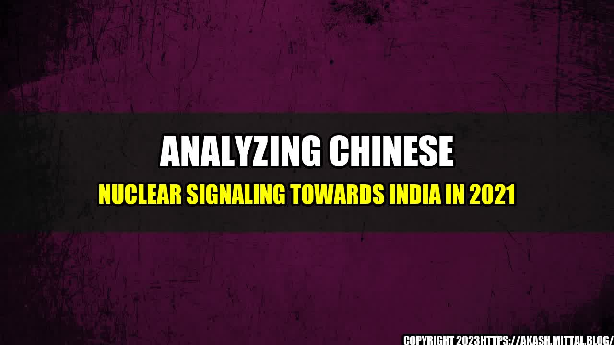

Analyzing Chinese Nuclear Signaling towards India in 2021
India and China have been in a state of tension since last year's border clash in the Himalayas. Now, there are signs that the conflict is entering a new phase, with China using nuclear signaling to try to gain leverage over its neighbor.
The Chinese government has been sending messages to India that suggest that it is prepared to use nuclear weapons if the situation warrants it. For example, in April, a Chinese government mouthpiece warned that if India "stirs up trouble" in the South China Sea, China could use nuclear weapons against it.
While it is unclear whether China would actually use nuclear weapons in a conflict with India, the fact that it is using this type of signaling is significant. It suggests that the Chinese government believes that it has something to gain by raising the stakes in the conflict, and that it is willing to take significant risks in order to achieve its objectives.
A recent analysis by the Stockholm International Peace Research Institute found that China's nuclear arsenal is growing at a faster rate than previously estimated. The report found that China has 350 nuclear warheads, up from 290 in 2020. This is in contrast to the United States and Russia, which have been reducing their nuclear arsenals in recent years.
Additionally, China is developing new types of nuclear weapons, such as hypersonic missiles and advanced submarines, that could give it an advantage over its rivals in a conflict. These weapons systems are designed to be difficult for traditional defense systems to detect and intercept.
Conclusion
- China's nuclear signaling towards India is a sign that the conflict between the two countries is escalating.
- China's growing nuclear arsenal and development of new weapons systems could give it an advantage in a conflict, and may embolden it to take risks.
- The international community should work to de-escalate tensions between India and China, and encourage both countries to pursue diplomatic solutions to their differences.
References:
- https://thediplomat.com/2021/04/chinas-nuclear-signaling-to-south-asia-is-escalating/
- https://www.sipri.org/sites/default/files/2021-06/fs_2106_china_nuclear_0.pdf
Hashtags:
#China #India #NuclearSignaling #SouthAsianTensions #Diplomacy #InternationalRelations
Category:
Politics
Curated by Team Akash.Mittal.Blog
Share on Twitter Share on LinkedIn